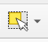
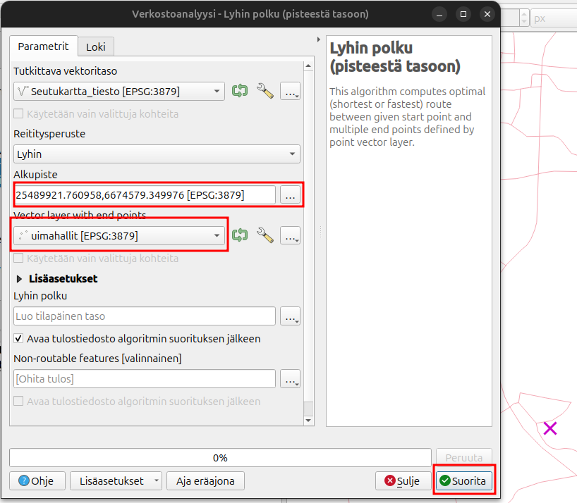

Lisätehtävä: Paikkatietoanalyysit
Harjoituksen sisältö
Harjoituksessa kokeillaan muutamia paikkatietoanalyyseja
Harjoituksen tavoite
Kouluttautuja oppii löytämään paikkatietoanalyysityökaluja
Valmistautuminen
Käynnistä QGIS-ohjelmisto. Tallenna QGIS-projekti nimellä (Projekti → Tallenna nimellä…) “QGIS_harjoitus_lisätehtävä”.
Rajaa ja sulauta
Tuo kurssihakemistosta Espoon pienalueet karttatasoa QGISiin. Jotta olisi helpompi lukea karttaa niin laitetaan nimiöt päälle. Paina hiiren oikealla Pienalueet-tasoa ja valitse Ominaisuudet. Nimiöt-välilehdellä valitset Yksinkertainen nimiöinti ja Arvoksi nimi_suomeksi.

Tarkoituksena on yhdistää pienalueet Lakisto, Lahnus ja Luukki yhdeksi alueeksi. Valitse kaikki kolme aluetta käyttämällä valintatyökalua


Valitse seuraavaksi Vektori -> Geoprosessointi -> Sulauta (dissolve). Rastita Käytetään ainoastaan valittuja kohteita, muuten yhdistäisimme koko Espoon. Paina tämän jälkeen Suorita. Nyt sinulla on uusi taso missä on yhdistetty kaikki kolme aluetta!
Saavutettavuusanalyysi
Tähän harjoitukseen pitää ensin lisätä saavutettvauusanalyysi_aineistot.gpkg tiedostosta kahdet tasot: uimahallit ja Seutukartta_tiesto.
Saavutettavuusanalyyseja on monenlaisia ja muutama työkalu tähään löytyy QGISin työkalupakista. Paina ensin seuraavaa symbolia jotta saat auki Työkalut-näkymän:
Navigoi itsesi Verkostoanalyysi alavalikolle tai etsi suoraan työkalu nimeltään Lyhin polku (pisteestä tasoon). Tutkittava vektoritaso on Seutukartta_tiesto ja siinä voi olla geometriavirheitä. Valitse viereisestä jakoavain-symbolin takaa Ohita kohteet, joilla virheellinen geometria. Palaa takaisin edelliseen näkymään painamalla kolmiota.

Valitse vielä alkupiste kartalta painamalla kolmea pistettä ja sen jälkeen paikkaa kartalta. Valitse päätepistetasoksi Uimahallit-tasoa. Paina tämän jälkeen Suorita.

On mahodllista laskea reitti etäisyyden tai matka-ajan mukaan. Etäisyys mitataan tässä koordinaattijärjestelmässä metreinä. Matka-aikaa laskieassa niin saadaan tietää matka-aikaa tunnin osina.
Voit avata uuden tason ominaisuustaulukkoa ja huomaat, että kolme uutta saraketta on syntynyt. Start ja end ovat alku-ja loppupisteet ja cost taas kertoo matkaosuus metreinä. Voit visualisoida tuloksia luokittelemalla tuloksia cost-sarakkeen mukaan. Kysy apua kouluttajalta jos et muista miten se tehdään.